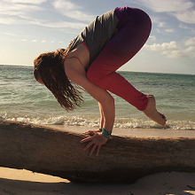
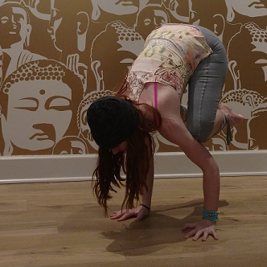

Weekly Class Schedule
| Restorative Yin at Lighthouse Yoga, Wednesdays 7:30 - 8:45pm | Sign up here |
Upcoming Workshops
The Foundation to FlyFriday January 20th 7:00pm-8:30pm at Lighthouse Yoga Ready to take flight? Join me to learn the foundations of arm balance poses. In this workshop we'll explore crow, side crow, and eka pada koundinyasana. We'll work on asanas to strengthen arm balances as well as the poses themselves. All levels welcome! Sign up here |
 |
Past Workshops
Advanced Arm Balances
Saturday October 1st 2016
Join me to learn some advanced arm balances. In this workshop we'll explore eka pada koundinyasana one, eka pada koundinyasana two, eight angle pose, and grasshopper. We'll learn how techniques in simpler postures can help us move deeper into advanced ones. Arm balance proficiency is not required! |

|
Arm Balance Foundations
Saturday April 16th 2016
Ready to take flight? Join me to learn the foundations of arm balance poses. In this workshop we'll explore crow, side crow, and eka pada koundinyasana. We'll work on exercises to strengthen arm balances as well as the poses themselves. All levels welcome! |
 |